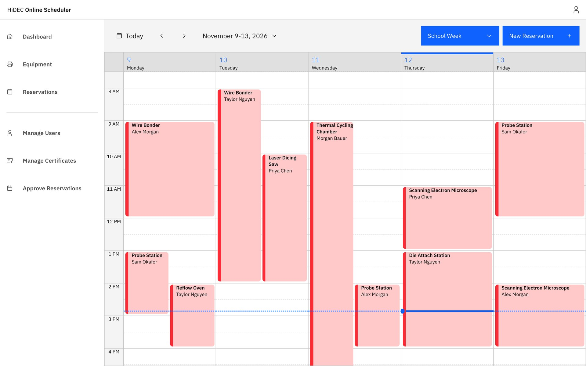
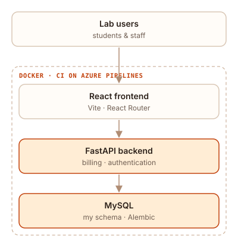
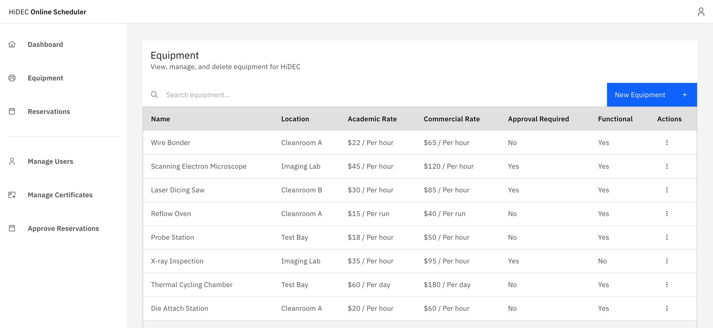
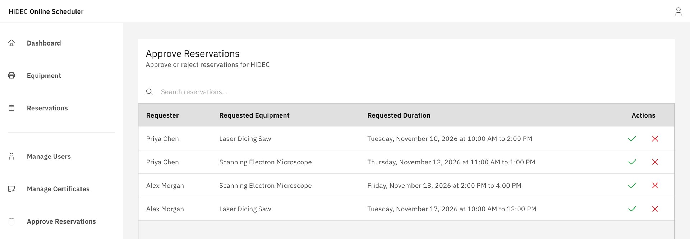

The problem
Clients booked lab time by emailing requests, and staff added them to a Google Calendar by hand. That meant a lot of back-and-forth, and the schedule only stayed accurate if every email got handled.
What I owned
- The entire database and schema. I designed the MySQL data model the whole app runs on and managed its changes with Alembic migrations.
- Billing logic, so the lab can charge for its time.
- Authentication, so the right people see and change the right things.
- The sponsor relationship. I led our weekly check-ins with the lab and turned their feedback into tasks for the team.

How it's built
- FastAPI backend with MySQL and Alembic migrations, in Docker
- React + Vite frontend with React Router
- CI through Azure Pipelines

Result
The app shipped to the lab. In the sponsor's words, it made their lives easier and more organized.


What I learned
The schema is the foundation, so careful planning upfront is a must. Because I owned the database, every part of the app sat on top of my own designs. A change in the schema later down the line isn't just my problem. It ripples through everyone's code. Careful planning at the start saves the whole team pain and time.
Get the full picture early. Frequent check-ins with the sponsor, and getting the complete set of requirements early, kept surprises from showing up late in the project.